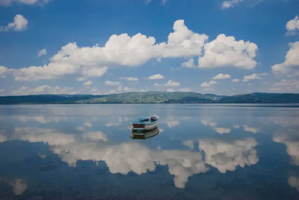
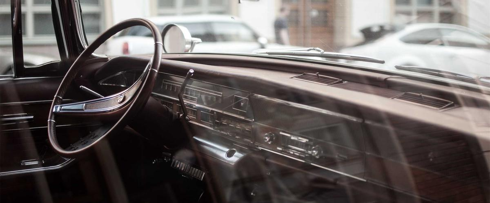
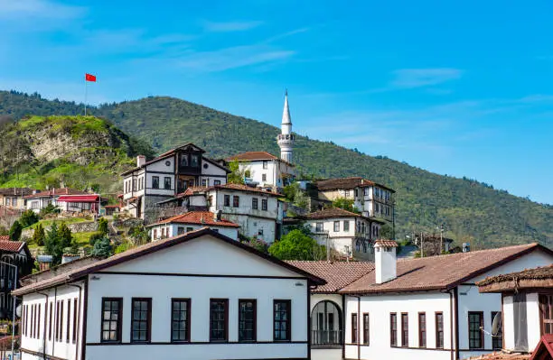
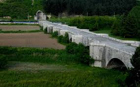

Şehirden Kareler
Sakarya'yı Tanıyalım
Sakarya, Marmara Bölgesi'nin doğusunda yer alan; tarihi, doğal güzellikleri ve misafirperver insanlarıyla Türkiye'nin en çekici şehirlerinden biridir. Sakarya Nehri'ne adını veren bu bereketli topraklar, tarih boyunca birçok medeniyete ev sahipliği yapmıştır. Şehir, bir yandan Sapanca Gölü'nün eşsiz sakinliği ve Kartepe'nin yemyeşil ormanlarıyla doğa tutkunlarına hitap ederken, diğer yandan 5 Temmuz 1889'da Adapazarı'nda kurulan ve şehrin kalbi olan çarşısıyla ticari canlılığını sürdürmektedir.
Sakarya'nın en bilinen doğal hazinelerinden Acarlar Longozu, dünyada ender bulunan longoz ormanlarından biridir ve biyolojik çeşitlilik açısından büyük önem taşır. Taraklı ilçesi ise restore edilmiş Osmanlı konakları, taş sokakları ve geleneksel dokusuyla "Sakin Şehir" unvanını taşır. Ayrıca şehir, Kurtuluş Savaşı'nın dönüm noktası olan Sakarya Meydan Muharebesi'ne sahne olmuş olmasıyla Türk tarihinde özel bir yere sahiptir. Termal kaynakları, yaylaları, rafting ve doğa yürüyüşü imkânlarıyla Sakarya, her mevsim ziyaretçilerine farklı deneyimler sunan bir turizm cennetidir.
Şehirden Bilgiler
Sakarya'nın yüzölçümü 4.895 km² olup 2024 verilerine göre nüfusu yaklaşık 1.100.000 kişidir. Şehir Adapazarı, Akyazı, Arifiye, Erenler, Ferizli, Geyve, Hendek, Karapürçek, Karasu, Kaynarca, Kocaali, Pamukova, Sapanca, Serdivan, Söğütlü ve Taraklı olmak üzere 16 ilçeye sahiptir.

Acarlar Longozu

Taraklı Evleri
